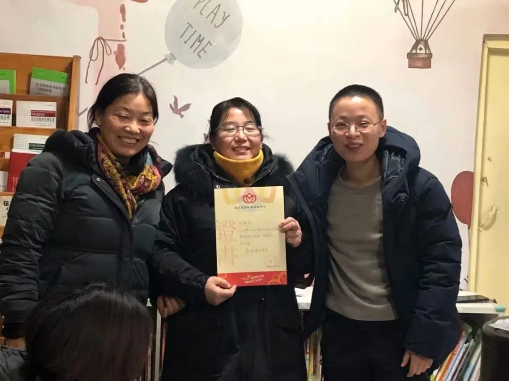

“我没有选择的余地”——疫情下家政女工的返乡与回城
原文链接 备份链接 摘要：她们曾为城市做出过看似微小但却关键性的贡献，值得在退休后得到来自社会的助力与尊重，她们的困境，也值得在春暖花开、疫情驱散后继续被审视与关注。 谁都绝不会想到，庚子鼠年的这个春节会是如此焦虑且悲壮。线上炽热，线下 …
编者按
2019年开始，面向农民工子女的实务学堂，和面向女工的木兰花开，合作组织了一个女工写作班，参加的女工，有的是家政工，有的是厨师，有的是销售员。
最近，大家有的在北京，有的在老家，多多少少，也都受到了新冠肺炎疫情的影响。我们就提议，大家可不可以写写自己这段时间的经历，结果，收到了不少文章。
从今天开始，我们将陆续发出来。欢迎大家来阅读，也欢迎大家打赏，打赏会转给作者。你们的鼓励非常重要。谢谢大家！

(从左到右)木兰花开负责人齐丽霞、本次作者张梅珍、实务学堂创始人欧阳艳琴的合影

木兰姐妹在疫情之下的记录文字
作者：张梅珍
自我介绍：我是一位全职妈妈，跟着爱人在北京打拼，现在孩子大点了，有时间也会去做一些零工。
年 前
想想年前后这几天，感觉有点后怕，这要从之前回老家说起。
我订的是1月18号回老家，因为那天姑娘放假，顺便去学校把姑娘接了，然后一块回老家。可就在前一天，北京的天阴沉沉的，下午就下起了雪，越来越大，到晚上的时候还在下。我心里就忐忑起来，不知道明天早晨能不能顺利出发。
到了第二天早晨，他爸凌晨3点就起来探路去了，回来跟我说赶紧起床，马路上没事，可以走。就这样顺利的出发了，心里还挺高兴。可好景不长，刚出北京，前方大雾弥漫，几十米都看不清楚前方的路况。所有的车辆都放慢了速度，大概走了几公里的样子，车子停下来了——前方封了高速，彻底的走不了了。
这是来北京这么多年第一次有这样的经历。在车上他爸还跟我开玩笑的说，让你起床不起床，这次让你在大马路上睡。我们在高速上足足待到了中午，才放行。
1月22号的时候，听到村里的大喇叭在播放着什么，他们说，大队说了，肺炎疫情厉害，不让拜年了。其实在回老家之前有看新闻，知道有这个疫情，新闻里每天会有这个消息，那个时候新闻里每天更新数字但没有增加多少，甚至有的时候都是零，说实话，心里没在意，没在意其实是对疫情的无知，没想到疫情会来的如此之凶猛。
1月24号那天，正是除夕夜，大队的大喇叭一整天都在播放着关于疫情的注意事项，不让出门，在家用手机给亲朋好友拜年，勤洗手，所有的吃的东西一定要做熟，一定要喝热水……新闻里也在滚动播放，让全国观众期待的春晚都在临时插播关于疫情节目。
从那个时候起心里才真正的紧张起来，想起了2003年的非典，让我毛骨悚然。然后就赶紧给我姐我哥他们打了电话。问问他们的情况，顺便给他们说今年就不去拜年了。疫情面前还是踏踏实实的跟家待着吧。
年 后
远在陕西的三姐说那边也不让出门了，（农历）初一那天侄女给我微信，说，小姑你们回北京吗？侄女也在北京。我说，还没想好呢，不知道该怎么办？如果回不去上学、上班怎么办？侄女说，小姑别回去了，在老家吧，老家安全，地广人稀，空气流通快。回去了还得去超市买东西什么的，谁知道身边都是哪的人呢，就在老家待着吧。
我说，如果在老家，万一疫情来了，这里没有北京医疗条件好。侄女开玩笑的说如果真的来了，那就没机会看了，也就轮不上咱们了。听到这话，心里还挺酸酸的。然后我跟他爸商量了一下，决定留在老家。
（农历）初二天气还不错，上午跟家待着，下午的时候有邻居打电话问去不去遛弯，我说，能出去吗？能。去吧，跟家待着闷死了。然后戴上口罩就走了。
村南有条河。河岸上好多人，男的、女的、老的、少的、还有好多孩子们。有的带着口罩，有的没有戴口罩。成群结伴的在岸边的乡村公路上慢悠悠的走着。有的就在河堤下边打羽毛球。因为我是第一次出去，感觉有些新鲜，同时又有些惧怕，万一……
（农历）初三跟初二一样下午去了河岸，我们刚走到河岸然后就看到一台挖土机过来了，有人问，干嘛呢这是？
堵路去，把这边所有的出口都堵上，不让进出了。
封死了？这么严重？那生活起居饮食怎么办？说着这话我们就走到村里的正路口那儿了，那儿有值班的几个人，桌子上有笔，纸。做登记用的，进出的人员都得登记。在微信群里他们聊天一会说这个是从武汉回来的，哪个是从武汉回来的，一会又说谁谁给逮走了，每天的空气中弥漫着这些信息。心里好沉闷啊。
上班延迟了，开学延迟了，北京所有的省际班车停运了，城里的公交停运了。
“你家囤菜了没？赶紧囤点菜吧，面粉昨天拉来几十袋都抢没了，那家人家一下要了五十斤的土豆、三十斤西红柿、一箱盐，赶紧去吧不然真的没得吃了。”
县城封城了，菜也弄不了了，拉菜的一晚上去了批发市场两次，明天就不让开门了，他爸闷闷的思索一下，出去了，没一会的工夫回来了，赶紧卸车。
“卸什么？”
“囤的东西啊。累死我了，好多人买东西。一袋面粉，十几斤土豆，一个老大老大的菜花，西红柿，小油菜，肉，鸡蛋，粉条，菠菜，西葫芦，车前坐上还有呢，买的水果。拿下来，不然忘了……”他爸自言自语的说着。
北京的房东在群里发信息：“租户们把你们的身份证发过来，要正反面，电话家庭住址要详细的。我去村委会给你们登记，你们回来就可以去村口办出入卡去……”
1月30号那天就发信息：“租户们别回来了，村里不让进了，在路上的返回去吧，就是来了也不让你进村。”并且还发了村委会给的通知的图片。
2月1号又发：“不让回来回来也不让进村，如果回来每个人80块钱政府集体把你们隔离到一个宾馆去。每人80自己出钱。政府不管，只管隔离。”
这一天天的就是跟家待着，真的是愁啊，不知道疫情哪天才能过去。祈祷灾难快些走吧，祈祷百姓安康度过这终生难忘的一个鼠年，祈祷百姓以后平安，健康，没有灾难，没有人祸。
编辑：王琛
制版：林楚虹

2018年3月创立于北京昌平，
是一个面向农民工子女的
全日制、非学历职业教育公益项目。
使命和愿景是：
探索打工子弟职业发展新路径，
为好的社会培养“珍贵的普通人”。
招收17岁以上农民工子女
报名咨询：ouzhou1283（欧阳）
捐赠支持请点击底部“阅读原文”
科蚪实务学堂
长按二维码向我转账
受苹果公司新规定影响，微信 iOS 版的赞赏功能被关闭，可通过二维码转账支持公众号。
原文链接 备份链接 摘要：她们曾为城市做出过看似微小但却关键性的贡献，值得在退休后得到来自社会的助力与尊重，她们的困境，也值得在春暖花开、疫情驱散后继续被审视与关注。 谁都绝不会想到，庚子鼠年的这个春节会是如此焦虑且悲壮。线上炽热，线下 …
原文链接 备份链接 《战疫口述记》，是燃财经在新型冠状病毒肺炎期间推出的特别栏目，记录疫情亲历者的观察和感受。本文为第4篇，查看前3篇请点击《我的“流浪”春节》《农村这样防肺炎》《我在武汉战肺炎》。 作者 | …
原文链接 备份链接 以下文章来源于我是南七道 ，作者南七道 疫情，让老蔡这样的小微型企业措手不及。而开工之路，更是遥不可及 *******文｜ 南七道******* 广东随处可见的小工厂（南七道2019年摄） 受疫情影响，最近包括 …
原文链接 备份链接 “疾控要像消防一样，在疫情处置中有决定权、处置权”从大年初六（1月30日）开始，中国疾控中心首任主任、北大公共卫生学院教授李立明再次“出山”，带领一批国内公共卫生领域的骨干们集中办公。他率领的这个团队的名字叫“中华预防 …
原文链接 备份链接 这是一封伦敦的来信。 作者是在英的老朋友，武汉人。 如她所说，现在像是无法返巢的候鸟。 黑山羊。六角手风琴。烟雾。 穿着白色长裙的小女孩从舞台中央站立起来。年长的人们摘下黑面罩。幕布被掀开。海洋气味的雨水从混合的乐声中 …